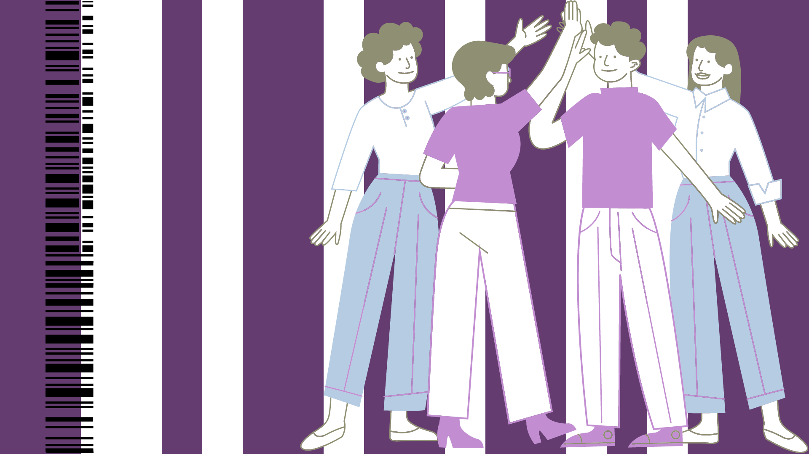

Organizers
Who we are, where we are from, and what we do
R-Ladies began as a meetup group in San Francisco in 2012 when Gabriela de Queiroz founded the first chapter and organized the first event. Over the next three years, three more groups started following this example. After the useR! conference in 2016, where Gabriela and other organizers met in person, R-Ladies Global was co-founded by several active community members. Since then, the organization has experienced massive and rapid growth, with the number of R-Ladies chapters increasing significantly. Today, R-Ladies has 219 chapters in 63 countries and over 3943 events contributing to promote gender diversity in the R community.
Federica Gazzelloni Lead Organizer. I am an independent researcher passionate about data science, with a background in actuarial statistics and expertise in collaborative environments. My journey extends from traditional actuarial work using Excel to advanced data science with R. As the lead organizer of R-Ladies Rome, I advocate for gender diversity and knowledge-sharing, hosting various events promoting the R language. I am also a book club facilitator with the R4DS online community, fostering collaborative learning. Additionally, I have contributed as a reviewer to global health initiatives, emphasizing accessible learning and effective communication. (September 2022 to Present)

Rafaela Ribeiro Organizer. I am Dietitian graduated from the Federal University of Pelotas - UFPel, with a master’s degree in progress in Cardiology and Cardiovascular Sciences from the Federal University of Rio Grande do Sul - UFRGS, in the line of research on Epidemiology of Disease Burden Associated with Cardiovascular Disease. With primary interest in Population Epidemiology and Epidemiological Surveillance of diabetes mellitus and its cardiovascular problems, as well as in the management of secondary data / health information systems. I am interested in methods related to causal inference, directed acyclic diagrams and population impact measures.(March 2024 to Present)

To get in touch with R-Ladies Rome, you can email us at rome@rladies.org, follow us on Twitter at @rladiesrome, and check out our GitHub account at meetup-presentations_rome. We welcome contributions from anyone interested in promoting gender diversity in the R community. You can contribute by attending our meetups, sharing your knowledge and insights, and helping us organize events.

We have a code of conduct that all members and participants are expected to follow. The code of conduct is designed to ensure that our community is a safe and welcoming space for everyone. You can find the code of conduct on our GitHub page. We take any violations of the code of conduct seriously and will take appropriate action to address them.